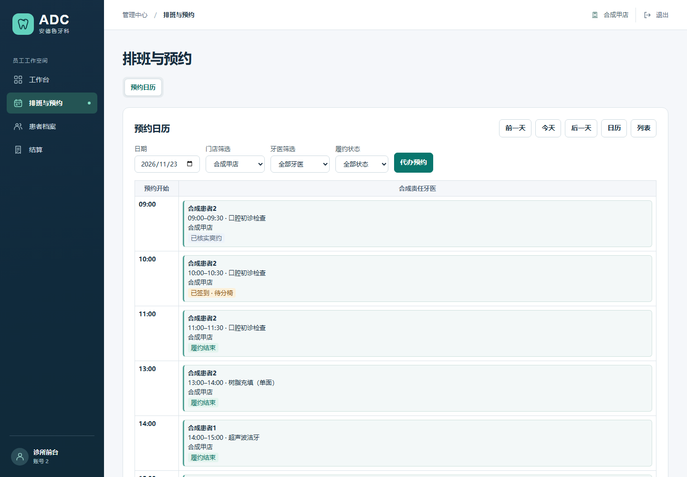
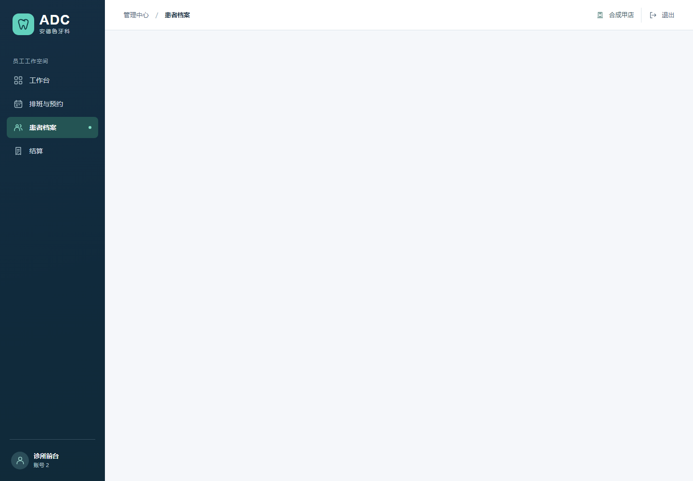

一个管理网站，
一个小程序，一套牙科业务。
员工在管理网站完成排班、预约、签到、诊疗、结算与经营核对；患者在微信小程序里完成预约、改期、取消和预约金查询。两端围绕同一预约号衔接，共用 Django 接口与 PostgreSQL 事实记录。

从预约日历接手一天的工作
同一登录入口、导航框架和详情布局，按岗位权限显示业务。以下画面来自本地合成库的真实接口驱动，不是设计稿。
预约日历 · 当天队列一眼看完
按医生与时间排布，覆盖已确认、已签到待分椅、履约结束和已核实爽约。顶部可切换日期、门店、医生与状态，前台可直接代办预约。
预约详情 · 签到与后续动作
首屏固定预约号、患者、门店、医生与时段，预约金独立显示。签到、改期、人工核实爽约等动作只在该角色与门店范围内出现。
诊疗详情 · 过敏核对与本次治疗
责任牙医可见病史与过敏提示，前台投影不返回临床正文。本次治疗按项目、数量、单位与冻结单价记录，结束后交前台开单。
接诊队列 · 从签到交到牙医
前台签到并分椅后，负责牙医在队列里接手；开始接诊时记录实际开始时间，并生成该次就诊与预约金退款义务。
结算队列 · 从就诊交接到主单
已结束或中止的就诊进入队列，待开单与已开单分开查看。每次就诊最多一张主单，重复开单返回原号与原单。
主单 · 部分收款与收退流水
应计、净实收、欠款、应退余额并列；原始收费明细与每笔成功收款可回查。预约金作为关联信息单独显示，不与诊疗收款混算。
项目与价格 · 版本化标准
项目单位、资格、预计占时与适配椅型统一维护；价格按生效区间版本化，既有预约、诊疗与主单保留各自快照。
经营报告 · 指标能回到原预约
实际就诊率与取消率同时显示原值和分子／分母，爽约与到期未处置单列。下钻只携带业务编号，不返回患者联系方式或病史。
季度核算 · 先正式版，再修订
正式确认版本优先展示，试算与修订分开呈现。基金按批准顺序复核，未确认版本不进入正式报告，越序不能发布。
患者从同一个预约号找到下一次就诊
原生 WXML / WXSS / JS，底部三个入口：首页、预约、我的。预约成功、改期与取消后都回到同一条预约记录。
页面结构示意：依据小程序 WXML / WXSS 与实际合成数据绘制，用于展示信息层级，不是运行截图。
预约主流程
从门店、项目、日期逐步收窄到医生时段，确认本人信息后进入 10 分钟占位与 50 元模拟预约金。
预约后服务
查看下一次就诊、历史预约和预约金记录；改期失败保留原安排，取消前先显示按时点计算的退款。
本人资料与门店
首次预约前完善就诊人、电话与紧急联系人；门店页显示全称、地址和可预约门店。
异常与恢复
占位响应丢失时按原动作键回查，进入同一条正式预约；时段被占用时保留已选门店、项目与日期，只刷新可选时段。
两端不是两套系统
同一个 Django `/api/v1`、同一套角色校验和同一个 PostgreSQL 业务库。网页与小程序只是两个入口。
能跑通的部分有证据，没收口的部分也在这里
以下结果来自 2026-11-23 的本机运行：后端全量测试、前端测试、小程序逻辑测试与真实接口截图。合成数据，不代表生产。
后端业务链 · 已通过
Django 全量 67 / 67 测试通过，覆盖 UC01–UC07 生命周期、预约并发争抢、跨店授权、签到分椅、过敏核对、主单收退、更正审批、季度版本、备份恢复与最小字段投影。
真实接口驱动 · 已取得画面
本地合成库含 10 笔预约，覆盖已确认、已签到待分椅、诊疗中、正常结束、爽约、取消与跨日预约；网页截图均由真实接口与角色会话生成。
网站工作台与患者档案 · 待接线
/dashboard 与 /patients 的组件和 API 已实现，但当前 main.tsx 尚未挂载，导航可进入而工作区为空。前端测试因此有 1 项失败（期望登录后落在 /schedule，实际落在 /dashboard）。
小程序逻辑测试 · 8 / 10
2 项失败：切换预约日期时旧请求仍可能覆盖新时段；确认页尚未解码 URL 编码的时段参数与医生名。页面模板与本地夹具其余 8 项通过。
开发者工具 · 待真机验收
原生 WXML / WXSS 编译成功，Node 夹具可运行页面逻辑；开发者工具服务端口当前关闭，预览交互、触控尺寸与真机安全区尚未完成验收。
体验部署 · 待环境
Linux HTTPS 体验部署仍需要可用主机、证书、受邀 AppID 与合法请求域名；当前以本机回环 API 与合成身份验证业务链。
| 验证项 | 结果 | 证据 / 备注 |
|---|---|---|
| 后端 Django 测试 | 67 / 67 通过 | 生命周期、并发、权限、资金、报表、恢复 |
| 网站前端测试 | 8 / 9 通过 | 1 项失败：工作台挂载与登录落点 |
| 小程序逻辑测试 | 8 / 10 通过 | 2 项失败：日期竞态、确认页参数解码 |
| 业务闭环截图 | 已生成 | 预约、诊疗、结算、经营、季度 |
| 性能基线 | 26.6 ms / 17.7 ms | 候选查询 / 最后一把椅锁等待（记录值） |
| 备份恢复演练 | 已核对 | 恢复点差异按已知回执保留，资金暂停 |
| 微信真机与体验部署 | 待验收 | 服务端口关闭、HTTPS 域名与 AppID 待配置 |

当前版本的一处可见缺口：“患者档案”已在导航中，页面组件也已写好，但还没有接入 main.tsx 的渲染分支，所以进入后只有空白工作区。工作台 /dashboard 同样如此。这是当前展示里最需要先收口的两处接线，而不是缺少页面本身。